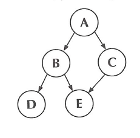

Uma árvore é uma estrutura de dados que se caracteriza por uma relação de hierarquia entre os elementos que a compõem. Exemplos de estruturas em forma de árvore são:
- o organograma de uma empresa;
- a divisão de um livro em capítulos, seções, tópicos;
- a árvore genealógica de uma pessoa.
De um modo um pouco mais formal, podemos dizer que uma árvore é um conjunto finito de um ou mais nós, tais que:
As árvores podem ser representadas de diversos modos, como por exemplo:
a) representação hierárquica
Neste exemplo, A é a raiz da árvore. Os nós B e C são "filhos" de A, e dão origem a duas sub-árvores, nas quais D e E são "filhos” de B, e F é "filho" de C.
b) representação por conjuntos
A árvore aqui representada é a mesma do desenho anterior. Neste caso, cada nó é representado por um conjunto formado por seus "filhos".
c) representação por expressão parentetizada
A mesma árvore pode ser representada pela expressão:
( A ( B ( D ( ) E ( ) ) C ( F ( ) ) ) )
Cada conjunto de parêntesis correspondentes contém um nó e seus filhos. Se um nó não tem filhos, ele é seguido por um par de parêntesis sem conteúdo.
d) representação por expressão não parentetizada
Ainda utilizando a mesma árvore, podemos usar a representação abaixo:
A 2 B 2 D 0 E 0 C 1 F 0
Cada nó é seguido por um número que indica a quantidade de filhos desse nó, e em seguida por esses filhos, representados do mesmo modo.
Pode-se representar uma árvore de muitos outros modos, mas é interessante notar que, dentre os exemplos apresentados, a representação a) é a que permite uma melhor visualização, e que será utilizada a partir deste ponto. As representações c) e d) não permitem boa visualização da estrutura, mas podem ser úteis para guardar em arquivos os dados de uma árvore.
Como, por definição, os sub-conjuntos s1, s2, ... sm são disjuntos, cada nó só pode ter um "pai". Assim, o desenho abaixo, por exemplo, não representa uma árvore:
Vejamos agora alguns termos utilizados para identificar algumas características de uma árvore ou de alguma parte dela.
- raiz – nó de origem da árvore
- folhas – nós que não têm filhos
- grau de um nó – número de filhos de cada nó
- nível de um nó – por definição, é zero para a raiz, e, para os demais nós, é o número de "linhas" que ligam o nó à raiz
- altura da árvore – é o nível mais alto da árvore
- floresta – conjunto de árvores disjuntas (eliminando-se a raiz de uma árvore, obtém-se uma floresta